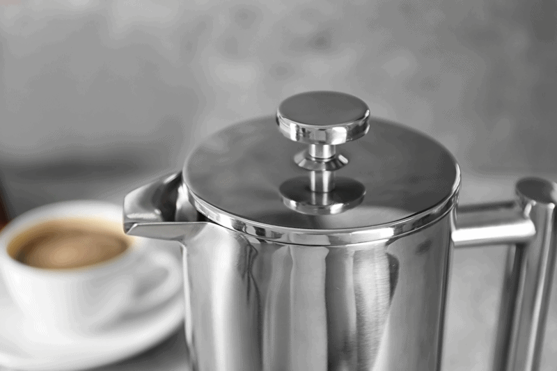

Transitioning away from Caffeine
Quitting caffeine, can be a hard habit to shake, or is it a habit that causes you to shake? Hmm, think about that. Caffeine is chemically addictive and how we react to it differs from person to person. If you consume caffeinated drinks, you will have a pretty good understanding as to how it affects you, positively or negatively.

Caffeine is quick-acting, that is often its attraction. Not long after you drink a beverage containing caffeine, it easily passes through body membranes… entering your bloodstream through the lining of your mouth, throat, and stomach. It only takes 45 minutes for 99% of the caffeine to be absorbed through these membranes.
Many people turn to caffeine because they feel that it helps to reduce stress and makes them feel less tired. When in fact the exact opposite is taking place in the body. Caffeine increases the rate at which neurons in the brain fire and stimulates both the central and sympathetic nervous systems. This stimulation is similar to our natural “fight or flight” reaction to stress. Our body starts pumping out stress hormones; adrenaline, norepinephrine, and cortisol. Some people mistake this feeling for energy. That is why when people get tired, they will turn to caffeine drinks to restore their energy, this creates an addiction that keeps feeding itself. (source)
Physiologic, Psychological, and Emotional Connections
Caffeine is hard to give up because we can develop a strong dependency on it for physiologic, psychological, and emotional reasons:
- Physiological: Caffeine has measurable physical effects on the body by increasing heart rate and respiration, and making us feel “more alive.”
- Psychological: Research shows that caffeine improves concentration and task performance. It can also help people feel more “social” and at ease, and we love to share the caffeine ritual with friends.
- Emotional: Perhaps the strongest aspect of dependency on caffeine is linked to its mood-lifting effects. Every day, we look forward to those treasured, oasis-like moments when we consume caffeine. (source)
Adrenal Awareness
If you are suffering from any stage of adrenal fatigue, you will want to work on cutting out caffeine, at least for now, if not for good. Caffeine itself isn’t the sole cause of adrenal dysfunction, but many of the changes that our bodies undergo when we use a lot of caffeine can strain our adrenals.
Forms of Caffeine
- Soda Pop
- Tea
- Decaffeinated Tea (it’s in there!)
- Coffee Drinks
- Decaffeinated Coffee (yep!)
- Energy Drinks
- Hot Chocolate
- Chocolate (raw cacao)
- Ice Cream
- Weight Loss Pills
- Pain Relievers
- Caffeine Pills (I had to state the obvious)
Detoxing Caffeine
The easiest way for most people to detox from caffeine is a little at a time, unlike sugar where I suggest going cold-turkey. Whether you are a tea or coffee drinker, start by reducing your choice of drink by one cup a day. For your second serving, pour a cup that’s half-regular and half-decaffeinated or Dandy Blend. Any ratio will work as long as you continue to taper down methodically.
If you are one that has to do things with the “all or nothing” attitude and choose to stop caffeine overnight, be prepared for more severe withdrawal symptoms. I only recommend this method if you can take some time off from your hectic days so you can really administer some self-love through this process. If you live an active life; work, family, etc… take the slower rate. This isn’t a race. This is your overall well-being, and you’re not the only one that has to live with you.
Withdrawal Symptoms
You may or may not be aware of your dependency on caffeine, until you miss a cup, or try giving it up. Most withdrawal symptoms peak within two to four days. Even if you quit cold turkey, most symptoms should disappear after just one week without caffeine. What to watch for…
- Headaches (throbbing, pressure-type)
- Fatigue
- Sluggishness
- Daytime drowsiness
- Inability to focus
- Irritability
- Depression
- Anxiety
- Reduced sense of well-being
Coping with Withdrawal Symptoms
- Headaches: For help with headaches, up your vitamin C and enjoy a cup of Tulsi tea which is rich in antioxidants.
- Drink plenty of water to help flush the body.
- Go for small walks or even just sit out in nature. Connect with nature and get some fresh air.
- Aromatherapy can do wonders to reduce the symptoms listed above.
- Headaches – peppermint oil – diffuse or inhale directly from the bottle.
- Anxiety – lavender, orange, lemon, frankincense, sandalwood, bergamot, or geranium oil. Anyone of these, diffuse or inhale directly from the bottle.
- Fatigue – lemongrass & basil combined, lavender, frankincense, peppermint – diffuse or inhale directly from the bottle.
- Depression – lavender, lemon, or bergamot – diffuse or inhale directly from the bottle.
- Rest: rest as much as possible.
- Take long, hot Epsom salt baths to help with any body aches or tension.
- Keep your BOWELS moving! This is so important because your body is going to be releasing a lot of toxins. Our bowels will help get them out of us!
 Healthier alternatives:
Healthier alternatives:
While our body is detoxing, we must be building it back up at the same time.
- Drink water with fresh lime or lemon juice or both with a dash of honey.
- Dandy Blend is a great alternative and good for liver support.
- Four Sigmatic Mushroom Coffee with Cordyceps & Chaga, great for adrenal support.
- Herbal Teas
- Green tea – L-theanine in green tea is the antidote to caffeine’s negative effects on the nervous system. *Does have small traces of caffeine.
- Nettle tea – Very cleansing and may be helpful in removing toxins from the body.
- Matcha green tea – It is rich in nutrients, antioxidants, fiber, and chlorophyll. *Does have small traces of caffeine.
- Roasted Dandelion tea – Great for supporting your liver through the detox process.
- Drink Kombucha or Kefir tea. They are both naturally fizzy which can help with that bubbly effect that you love in soda. They also provide a dose of probiotics for promoting better digestion and health of your gut.
- Learn to make or buy nutritious smoothies made out of green vegetables like spinach, low sugar fruits like blueberries, and tasty ingredients like coconut butter that are full of essential nutrients and health-promoting fatty acids.
- Click (here) to visit my Beverage Category for other ideas.
My personal take on Caffeine
Do I think that all caffeine is bad for us? Do I think coffee or tea is bad for us? Do I think sports drinks, soda, or other caffeine-containing drinks are bad for us? Yes and No. I believe that some are ok but you need to look at the drink as a whole. What other ingredients are in it? Sugar? Chemicals? Etc. I enjoy cold-pressed coffee in small amounts. At most I might consume 1/2 cups worth, but I go through phases of having it and not having it.
I also believe it depends on how your body metabolizes caffeine. How does it make you feel? Are you using it to stay awake or to give you an instant boost of energy? Do you turn to it when stressed? Do you have health issues? Adrenal issues? In these cases, I recommend cutting it out so your body can heal and find other healthier ways to support your body.
Disclaimer
This website is not intended to provide medical advice. All content, including text, graphics, images, and information available on this site is for general informational, entertainment, and educational purposes only. The content is not intended to be a substitute for professional diagnosis or treatment. The author of this site is not responsible for any adverse effects that may occur from the application of the information on this site. You are encouraged to make your own healthcare decisions, based on your research and in partnership with a qualified healthcare professional.
© AmieSue.com